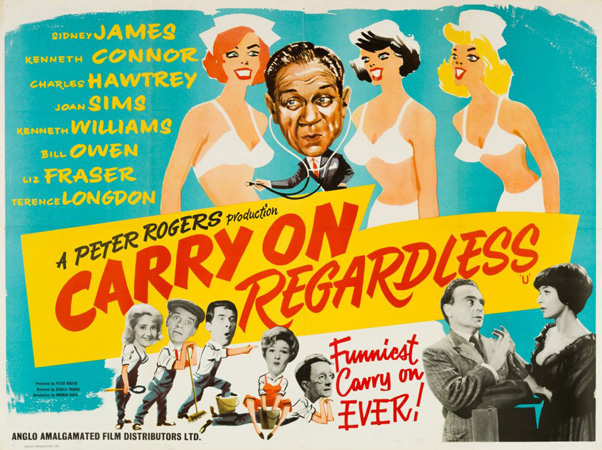

Peter Rogers
Terence Alexander
Down at the local labour exchange, everyone is moaning about the lack of decent jobs, unaware that nearby Bert Handy and his secretary Miss Cooling are attempting to fill vacancies, at a new enterprise called Helping Hands. When word gets round, people are quick to visit the agency, notably Sam Twist, Francis Courtenay, Delia King, Gabriel Dimple, Lily Duveen, Mike Weston and Montgomery Infield-Hopping. Bert decides to hire them all and at first business is slow. The only customer is a man who speaks gobbledygook but since Francis (who can speak 16 languages) is not present nobody can understand him and he goes on his way. Within a few days business picks up and Delia has an assignment to try on a complete women's wardrobe for Mr Delling, a gentleman who is planning a surprise for his wife. However things get complicated when the man's wife arrives home unexpectedly.
Meanwhile Sam Twist is sent to a baby-sitting job, only to find that there is not a baby to be sat, instead there is Mrs Panting, a woman who needs to make her husband jealous, succeeding in the process with Sam getting a black eye. The following day, Francis is assigned to take a pet for a walk but when he gets to the owner's house, he finds out it is a chimpanzee. He takes the chimp for a walk and soon discovers that people who work in the transport industry have an aversion to apes. They eventually end up at a chimps tea party, enjoying a nice afternoon tea. Next is Lily Duveen, who has been employed at a wine tasting evening, to collect invitation cards from the attendees. After she has performed this task, she samples some of the wines and makes a bit of a spectacle of herself.
Later a man from Amalgamated Scrap-Iron arrives in the Helping Hands office. He is obviously busy as he requests that someone take his place in the queue, at the hospital outpatients department. Bert says he will get someone on the case but the chap insists that the top man does the job himself, so Bert ends up queuing at the hospital where he is mistaken for an eminent diagnostician. The next job that Francis undertakes, is in the field of photography as a model. Obviously very chuffed that he has been chosen, he is crestfallen when he discovers that the job is an advertisement for a bee-keeper's helmet. His next job is between a bickering couple. The husband can not understand his wife, who continually berates him in her native German. Thanks to Francis getting a bit emotionally involved, the wife starts speaking English and the couple make up.
Lefty Vincent, a boxing friend of Bert's, pops into the office. He requires four helpers to act as seconds, for his fighter Dynamite Dan. When they get to the venue, Dan is terrified by his opponent, Mickey McGee, so pretends that he has sprained his finger. The fight is off until Gabriel takes on McGee instead. Sam is excited over his next job. Due to a mix-up, he thinks he is on a top secret spying mission to the Forth Bridge when all that is required of him is to make up a fourth in a game of bridge. When Sam gets back, he learns that the whole of Helping Hands have been engaged to demonstrate exhibits at the Ideal House exhibition. Needless to say all of the demonstrations end in calamity. Sam's next job is at an exclusive men's club, where no matter how hard he tries he can not keep silent, which is a strict rule of the establishment.
Miss Cooling decides on a new filing system, for a more streamlined operation and job cards are put in cubby holes for each of the workers. Disaster strikes when the cleaner knocks the box down and puts the cards back all mixed up. Everyone gets someone else's assignment, with misunderstandings all round. Finally, the gobbledygook man turns up again and this time Francis is there to translate. He is their landlord and has been trying to inform Bert that he will have to vacate the premises, because he has had a better offer. Due to a show of unity by all the staff, the landlord agrees that they can stay, on the provision that they do something for him. His main interest is property development and he needs a house cleared and cleaned. Unfortunately the team end up demolishing the house but thankfully it turns out that it needed demolishing for a block of flats anyway, so all ends well.
Filming dates: 28 November 1960 – 17 January 1961.
Interiors: Pinewood Studios, Buckinghamshire.
Exteriors: The corner of Park Street and Sheet Street in Windsor, Berkshire, doubled for the Helping Hands Agency. The location was used again a decade later for the Wedded Bliss agency in Carry On Loving.
By now a fairly regular team was established with Sid James, Kenneth Connor, Charles Hawtrey, Joan Sims and Kenneth Williams all having appeared in previous entries. Hattie Jacques – who was also a regular – makes a cameo appearance during a hospital scene. "Professor" Stanley Unwin appears in a guest role, playing his trademark "gobbledegook" speaking act. This would be the final appearance in the series for early regular Terence Longdon. Liz Fraser makes her debut in Carry On Regardless and would appear in a further three Carry On films
Yoki the Chimpanzee had a bit of an episode and started smashing the ornaments in the hall of the house where filming was taking place. It took his owners over an hour to calm him down before any filming could take place.
Terence Longden's role was originally due to go for Leslie Phillips, however Leslie was having none of it and declined the role as he didn't want to be typecast as the 'silly ass'. Norman Hudis was forced to restructure the role, but a London newspaper still managed to criticize Leslie's performance in the film, even though he wasn't in it!
The drink that Joan Sims drinks at the wine tasting party was actually neat gin. Gerald Thomas switched the non alcoholic drink in Joan Sims' glass for real claiming that he wanted a good 'reaction' shot.
At-A-Glance Movie Review - "Fifth in the Carry On series, Carry On Regardless is the weakest of the six installments scribed by Norman Hudis and perhaps the weakest of the first 24. There are laughs here and there, particularly from series regular Joan Sims, who does a great drunk act. But it's meandering and unfocused, and all too many of the sketches fall flat. Perhaps one of the problems is that there is no establishment, like the military, the educational system, or the police force, that the comedy can play against ... The lack of a narrative throughline means the film loses its momentum every time a sketch comes up short. Some work, but too many don't."